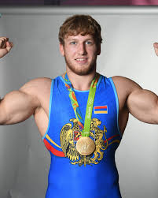
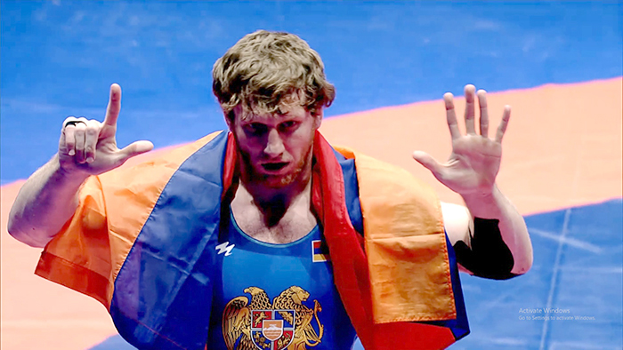

A Legendary Career
Artur has won four Olympic medals: Gold in Rio 2016, Silver in Tokyo 2020 and Paris 2024, and Bronze in London 2012.
That success is matched by four World Championship titles, showing his long-term dominance in the 97kg division.


He proved his excellence again and again, earning respect from fans and rivals with every decisive match.
Check the stats: Official Olympic Record